treesifter Instructor’s Guide
00-Instuctor-Guide.RmdIntroduction
treesiftr is an R package (R Core Team 2018) for visualizing the relationship between phylogenetic trees and phylogenetic data. Phylogenetic trees are crucial to the study of comparative biology, taxonomy, and evolution. However, understanding how to read a phylogenetic tree, and how a phylogenetic tree relates to underlying phylogenetic data, remains challenging.
How to Use the Instructor’s Guide
treesiftr has two modes. The first is a graphical user interface (GUI). Exercise 01-treesiftr is meant to be used with the graphical interface. The second is the RStudio interface. 02-treesiftr-advanced is meant to be used in RStudio, with executeable code blocks.
The first part of the instructor guide concerns the use of the GUI. The second part explains the RStudio interface, with worked examples.
Tip
Linked text goes to the glossary. If you see a term you don’t recognize, remember you can refresh your memory at the bottom of this worksheet!
01-treesiftr Instructor’s Guide
Navigate to the treesiftr application.
treesiftr works by subsetting a phylogenetic matrix using the start and step arguments. These are found on the left-hand side of the screen. The start argument controls where in the matrix you would like to begin visualizing characters. For example, a start value of 1 would indicate to begin visualizing characters from the first character in the matrix. The step value indicates how many characters at once to visualize. A step value of three would indicate characters should be viewed in threes. For example, if start = 1 and step = 3, the visualization will show characters 1, 2, and 3. The start and end points of character visualizations are noted in the upper left-hand corner of the visualization.
There are also two checkboxes. Leave these unchecked until otherwise noted.
treesiftr works by subsetting a phylogenetic matrix by user input. Then, a parsimony tree is constructed in Phangorn (Schliep 2011, Schliep2017) from the user-defined subset. The tree is scored under both parsimony and Lewis’ Mk model (Lewis 2001) for discrete character data. The data and tree are then visualized using ggtree (Yu et al. 2017), based upon the ggplot2 package (Wickham 2016). This application makes use of Shiny to provide a graphical interface, but there is a second included tutorial for more experienced users of the R statistical language.
Parsimony Questions
- Visualize characters 1 and 2. What is the parsimony score for this character set. Click “Do you want to print the parsimony score?” in the interface to check your answer.
Instructor’s Note: The answer is two, as viewed in the below screenshot.

Question One Answer
- Visualize characters 2 and 3. What monophyletic group from tree 1 is no longer on this tree? Click below for the answer
Instructor’s Note: The answer is Ursavus brevirhinus, Ballusia elmensis, and Ursavus primaevus. Ursavus primaevus is no longer sister to Ursavus
brevirhinus and Ballusia elmensis on the tree of character 2-3. Sample output follows.
Question One Answer
- What is the parsimony score of the 31-34 character set? Click “Do you want to print the parsimony score?” in the infterface to check your answer.
Instructor’s Note: The answer is 7. The output you should see is below.

- Which character, 8, 9 or 10, represents a reversal?
Instructor’s Note: The root of the tree likely blue, with a change to brown on the branch leading to Tremarctos, Melursus, Helarctos, and Ursus. Ursus thibetanus posesses the ancestral blue state, and is the best candidate for reversal.
Question One Answer
- What information would we need to decide if the “1” state possesed by Zaragocyon_daamsi in character 52 is an autapomorphy?
Instructor’s Note: To make this decision, we would want to know if there are other bears that are not sampled on this tree that posess this character. We can view the tree like so:
- Click the switch that says “Do you want to print the likelihood score under the Mk model?” and the switch that says “Do you want to print the parsimony score?”. Do all characters with the same parsimony score have the same likelihood score?
Instructor’s Notes: It is possible for characters with the same number of parsimony > steps to have different likelihood scores.
- Compare characters 46-49 and 47-50. Why does set 47-50 have a better likelihood than 46-49?
Instructor’s Notes: Answers may vary. But generally, a character (character 46) that implies changes on a fairly short branch is replaced with one implying changes on longer branches.
- What is the relationship between the likelihood score and increasing the number of characters visualized?
Instructor’s Notes: The likelihood should become more negative (less likely)
- What is the minimum number adding a character can add to the parsimony score?
Instructor’s Notes: 1
- These trees are fully resolved. Based on your exploration of the data, does this degree of resolution make sense?
Instructor’s Notes: For some trees, we can see that there is no character data supporting the grouping. Parsimony software generally displays fully-resolved trees - this may be misleading if little to no data support the grouping!
02-treesiftr-advanced Instructor’s Guide
Instructor’s Note: A sample slide deck for more advanced audiences is included in the folder
inst/slides. This slide deck is meant to be viewed in RStudio, as it has executeable code blocks. Hoever, it is also included in HTML format, if this is desireable for presentation. This is simply included as a sample of how > one might choose to deliver a lecture to cover some of the phylogenetic terms in this activity. It is not necessary to complete it to use this activity!
treesiftr works by subsetting a phylogenetic matrix using the start, stop and step arguments. The start argument controls where in the matrix you would like to begin visualizing characters. For example, a start value of 1 would indicate to begin visualizing characters from the first character in the matrix. The stop value indicates what will be the first character in the last visualization. A stop value of 10 would indicate that the first character in the last visualization should be character 10. The step value indicates how many characters at once to visualize. A step value of three would indicate characters should be viewed in threes. For example, if start = 1, stop = 10, and step = 3, 10 visualizations will be produced. The first will visualize characters 1, 2, and 3. The final will be characters 10, 11, and 12.
A maximum parsimony tree is then estimated from each dataset. The tree is scored under both parsimony and Lewis’ Mk model (Lewis 2001) for discrete character data. The data and tree are then visualized using ggtree, based upon the ggplot2 package. This application makes use of Shiny to provide a graphical interface, but in this tutorial, we will use the R Studio interface to visualize our data.
Installation
Currently, treesiftr can be installed via the devtools install_github function. treesiftr has a number of required packages. Install and load the below.
Instructor’s Note: This does not auto-execute in the instructor’s guide.
Subsetting the phylogenetic matrix
The first step to making a treesiftr visualization is to select the subset of the phylogenetic matrix that we would like to visualize. This is performed via a function called generate_sliding. The below command will subset the
# Locate package data and read alignment
fdir <- system.file("extdata", package = "treesiftr")
aln_path <- file.path(fdir, "bears_fasta.fa")
bears <- read_alignment(aln_path)
# Read in a starting phylogenetic tree
tree <- read.tree(file.path(fdir, "starting_tree.tre"))
# Generate our list of dataframe subsets
sample_df <- generate_sliding(bears, start_char = 1, stop_char = 5, steps = 1)The result of this is a dataframe, shown below:
## starting_val stop_val step_val
## 1 1 2 1
## 2 2 3 1
## 3 3 4 1
## 4 4 5 1
## 5 5 6 1This dataframe dispays the start character (the first character that will be visualized) and stop character (the final character that will be visualized).
We can then build trees from each subset:
output_vector <- generate_tree_vis(sample_df = sample_df, alignment = aln_path, tree = tree, phy_mat = bears)## Final p-score 2 after 0 nni operations
## Final p-score 2 after 0 nni operations
## Final p-score 2 after 0 nni operations
## Final p-score 2 after 1 nni operations
## Final p-score 2 after 1 nni operationsThe above code saves the trees to a vector, but does not visualize them. They can be viauslized by naming the vector, like so:
## [[1]]
##
## [[2]]
##
## [[3]]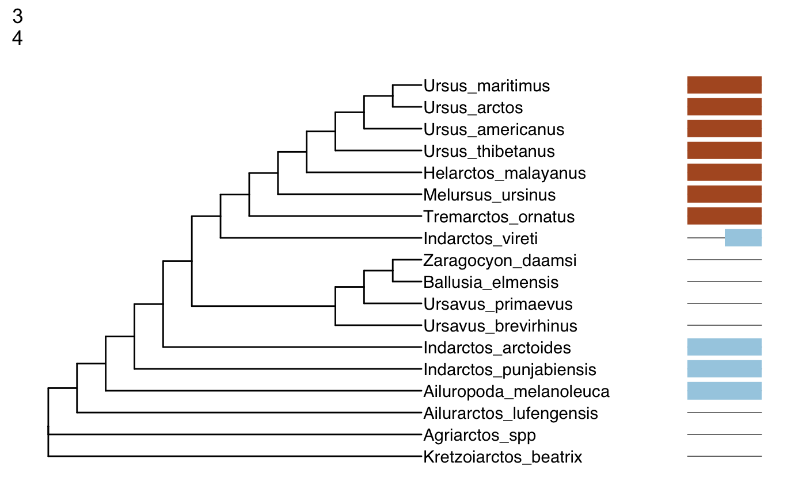
##
## [[4]]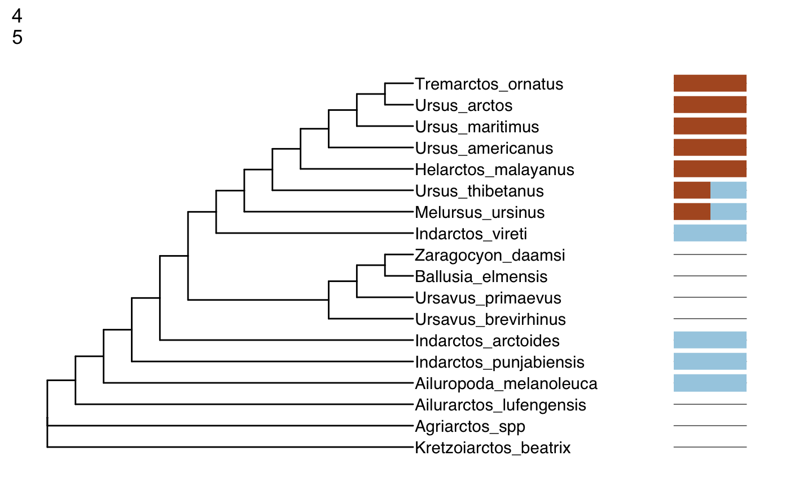
##
## [[5]]
Phangorn (Schliep 2011, Schliep2017) requires a starting tree to estimate a parsimony tree. We specify the tree we read in earlier for this purpose. The trees, which were generated with ggtree (Yu et al. 2017) have been saved to a vector, which can be displayed in its entirety, or subsetted to look at specific trees.
Questions
- Visualize characters 1 and 2. What is the parsimony score for this character set? Once you have answered this question,check your answer by adding the parismony score using the
pscoreargument:
output_vector <- generate_tree_vis(sample_df = sample_df, alignment = aln_path, tree = tree, phy_mat = bears,
pscore = TRUE)## Final p-score 2 after 0 nni operations
## Final p-score 2 after 0 nni operations
## Final p-score 2 after 0 nni operations
## Final p-score 2 after 1 nni operations
## Final p-score 2 after 1 nni operations## [[1]]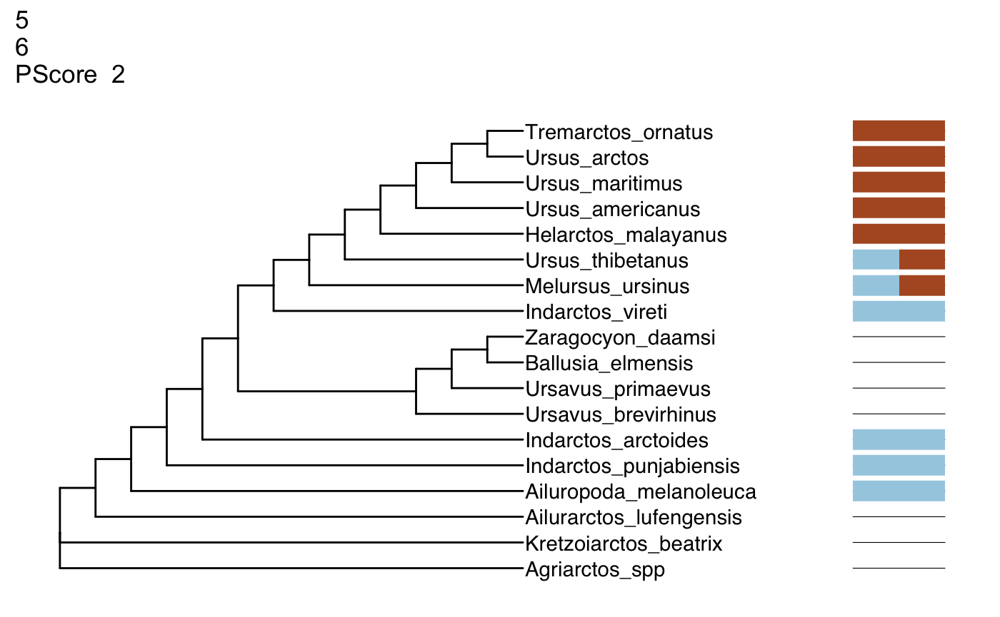
##
## [[2]]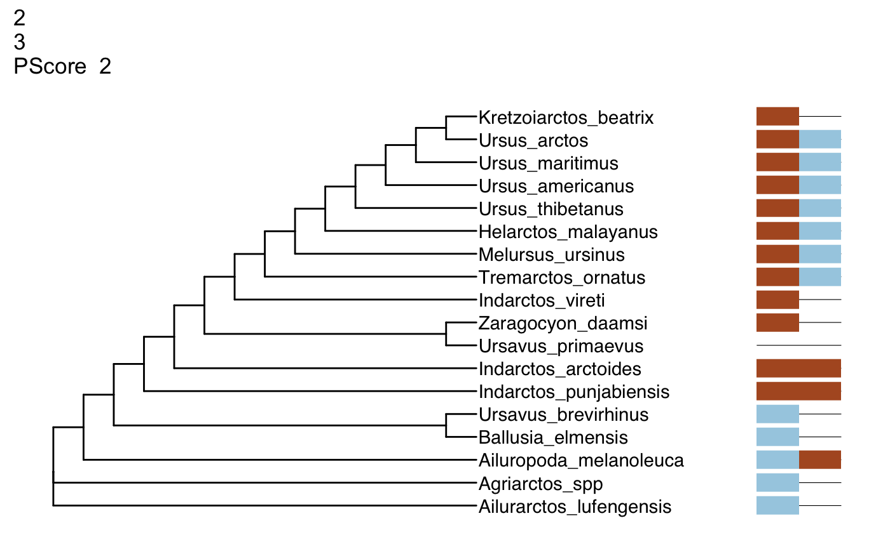
##
## [[3]]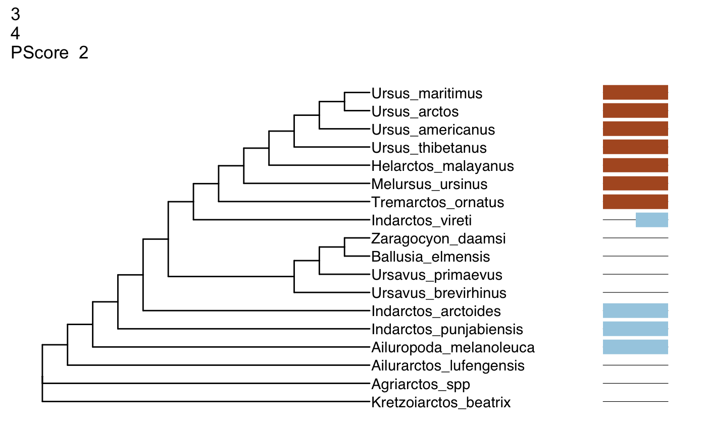
##
## [[4]]##
## [[5]]Instructor’s Note: The answer is two, as viewed in the first visualization in the vector.
- Visualize characters 2 and 3. What monophyletic group from the tree of characters 1 and 2 is no longer on this tree?
Instructor’s Note: The answer is Ursavus brevirhinus, Ballusia elmensis, and Ursavus primaevus. Ursavus primaevus is no longer sister to Ursavus brevirhinus and Ballusia elmensis on the tree of character 2-3.
- What is the parsimony score of the 31-34 character set?
Instructor’s Note: The answer is 7. This can be checked like so:
sample_df <- generate_sliding(bears, start_char = 31, stop_char = 32, steps = 3)
output_vector <- generate_tree_vis(sample_df = sample_df, alignment = aln_path, tree = tree, phy_mat = bears,
pscore = TRUE)## Final p-score 7 after 2 nni operations
## Final p-score 9 after 2 nni operations## [[1]]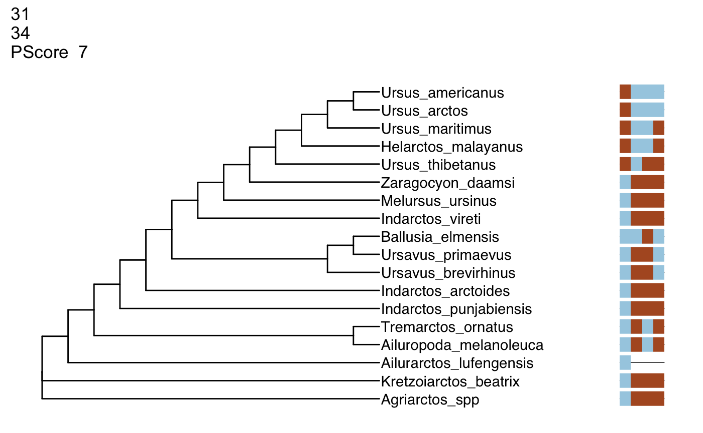
Instructor’s Note: The root of the tree likely blue, with a change to brown on the branch leading to Tremarctos, Melursus, Helarctos, and Ursus. Ursus thibetanus posesses the ancestral blue state, and is the best candidate for reversal. This can be verified like so:
sample_df <- generate_sliding(bears, start_char = 8, stop_char = 9, steps = 2)
output_vector <- generate_tree_vis(sample_df = sample_df, alignment = aln_path, tree = tree, phy_mat = bears,
pscore = TRUE)## Final p-score 4 after 0 nni operations
## Final p-score 4 after 1 nni operations## [[1]]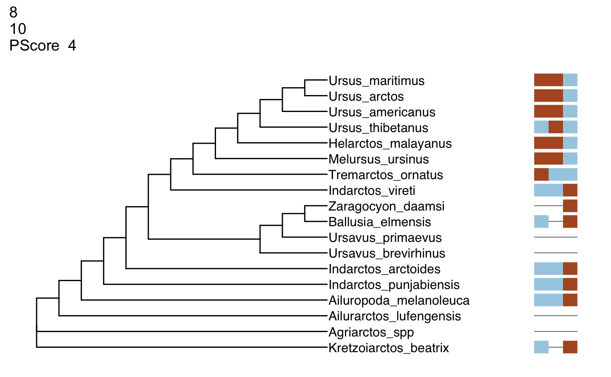
- What information would we need to decide if the “1” state possesed by Zaragocyon_daamsi in character 52 is an autapomorphy?
Instructor’s Note: To make this decision, we would want to know if there are other bears that are not sampled on this tree that posess this character. We can view the tree like so:
sample_df <- generate_sliding(bears, start_char = 52, stop_char = 53, steps = 1)
output_vector <- generate_tree_vis(sample_df = sample_df, alignment = aln_path, tree = tree, phy_mat = bears,
pscore = TRUE)## Final p-score 2 after 0 nni operations
## Final p-score 2 after 0 nni operations## [[1]]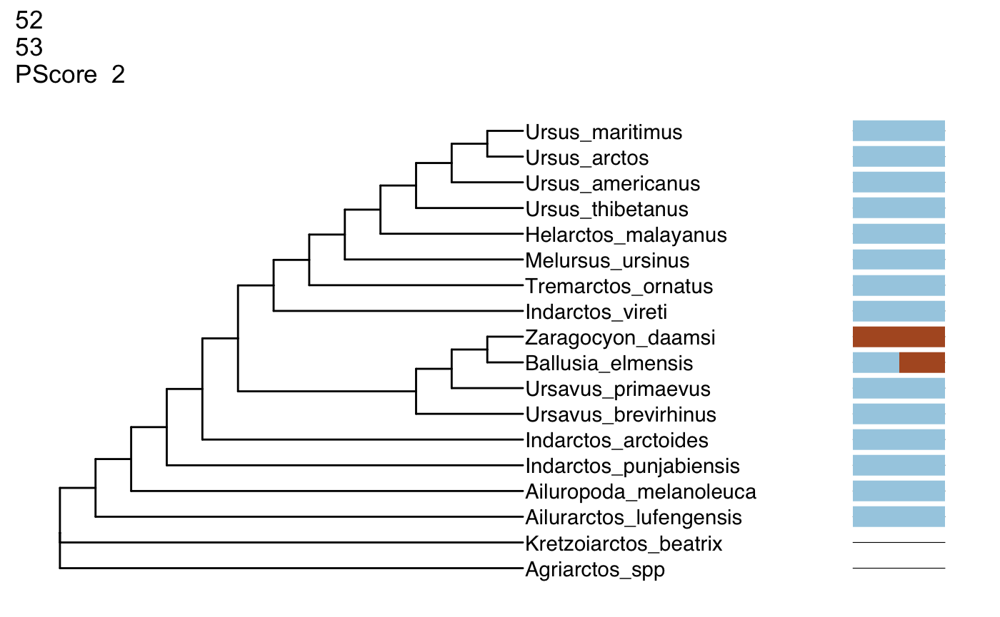
- Do all characters with the same parsimony score have the same likelihood score? You can add the likelihood score to the visualization using the below code:
output_vector <- generate_tree_vis(sample_df = sample_df, alignment = aln_path, tree = tree, phy_mat = bears,
pscore = TRUE, lscore = TRUE)## Final p-score 2 after 0 nni operations
## Final p-score 2 after 0 nni operations## [[1]]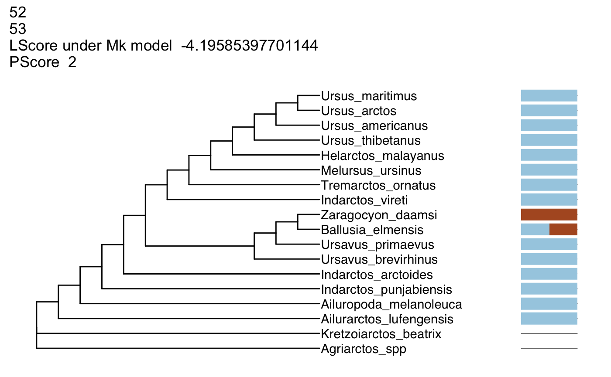
##
## [[2]] > Instructor’s Notes: It is possible for characters with the same number of parsimony > steps to have different likelihood scores.
> Instructor’s Notes: It is possible for characters with the same number of parsimony > steps to have different likelihood scores.
- Compare characters 46-49 and 47-50. Why does set 47-50 have a better likelihood than 46-49?
Instructor’s Notes: Answers may vary. But generally, a character (character 46) that implies changes on a fairly short branch is replaced with one implying changes on longer branches.
sample_df <- generate_sliding(bears, start_char = 46, stop_char = 49, steps = 3)
output_vector <- generate_tree_vis(sample_df = sample_df, alignment = aln_path, tree = tree, phy_mat = bears,
pscore = TRUE, lscore = TRUE)## Final p-score 7 after 0 nni operations
## Final p-score 7 after 0 nni operations
## Final p-score 5 after 1 nni operations
## Final p-score 5 after 1 nni operations## [[1]]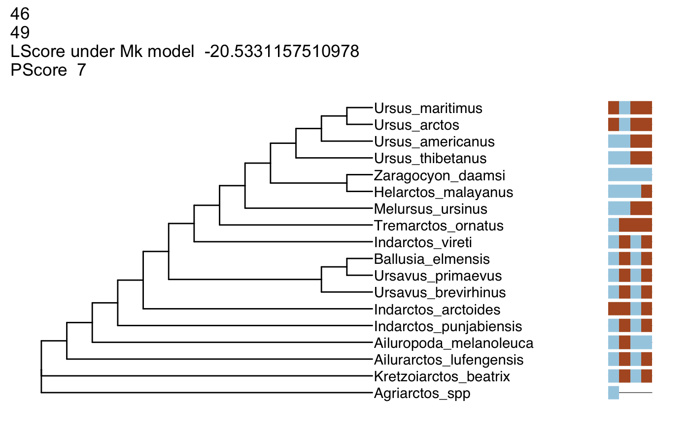
##
## [[2]]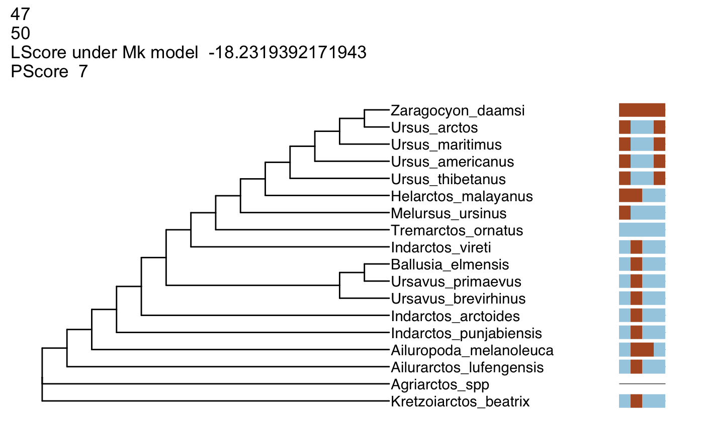
##
## [[3]]
##
## [[4]]
What is the relationship between the likelihood score and increasing the number of characters visualized? > Instructor’s Notes: The likelihood should become more negative (less likely)
What is the minimum number adding a character can add to the parsimony score?
Instructor’s Notes: 1
- These trees are fully resolved. Based on your exploration of the data, does this degree of resolution make sense?
Instructor’s Notes: For some trees, we can see that there is no character data supporting the grouping. Parsimony software generally displays fully-resolved trees - this may be misleading if little to no data support the grouping!
Glossary
Ancestral State: A character state possessed by the ancestor of a group
Autapomorphy: A character state that is unique to a specific taxon.
Derived State: A character state that is different from the ancestral state.
Likelihood Score: The likelihood of the observed data under a specific model.
Maximum likelihood: A phylogenetic optimatlity criterion under which phylogenetic data are modeled according to sets of assumptions. Under this criterion, the tree that has the best (“maximum”) likelihood score under the assumed model is to be preferred.
Maximum parsimony: A phylogenetic optimality criterion. This criterion holds that the tree implying the fewest changes in the characters used to generate it should be preferred.
Monophyletic: A group on a phylogeny of an ancestor and all of its descendents.
Parsimony Score: The number of changes implied by a character on a tree.
Reversal: A change from the derived state back to the ancestral state.
References
Lewis, Paul O. 2001. “A Likelihood Approach to Estimating Phylogeny from Discrete Morphological Character Data.” Systematic Biology 50 (6). Oxford University Press: 913–25.
R Core Team. 2018. R: A Language and Environment for Statistical Computing. Vienna, Austria: R Foundation for Statistical Computing. https://www.R-project.org/.
Schliep, K.P. 2011. “Phangorn: Phylogenetic Analysis in R.” Bioinformatics 27 (4): 592–93. https://doi.org/10.1093/bioinformatics/btq706.
Wickham, Hadley. 2016. Ggplot2: Elegant Graphics for Data Analysis. Springer-Verlag New York. http://ggplot2.org.
Yu, Guangchuang, David Smith, Huachen Zhu, Yi Guan, and Tommy Tsan-Yuk Lam. 2017. “Ggtree: An R Package for Visualization and Annotation of Phylogenetic Trees with Their Covariates and Other Associated Data.” Methods in Ecology and Evolution 8 (1): 28–36. https://doi.org/10.1111/2041-210X.12628.